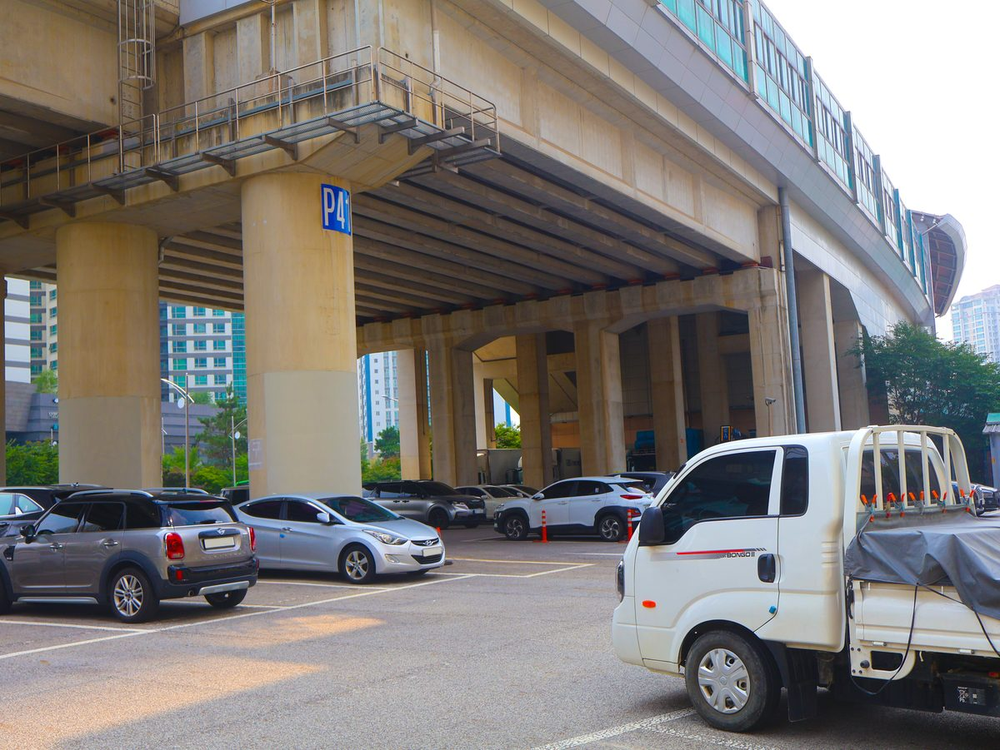

인천햇빛발전협동조합, 공영주차장 태양광 수익 시민배당·지역환원 조례 요구

1,000㎡ 이상 공영주차장 태양광 의무화 뒤 인천시·iH 약 40MW 사업 추진…조합은 시민펀드 넘어 협동조합의 시공·소유·운영 참여 보장 주문
인천햇빛발전협동조합이 재생에너지의 날인 23일 보도자료를 내고, 인천시가 추진하는 공영주차장 태양광 사업의 발전 수익을 시민에게 배당하고 지역에 환원하는 조례를 만들어야 한다고 주장했다. 지난해 11월 28일 개정 신재생에너지법이 시행되면서 주차구획 면적 1,000㎡ 이상인 공영주차장에는 태양광 설치가 의무가 됐다. 인천시는 인천도시공사(iH)와 함께 약 40MW 규모 사업을 추진하며 시민펀드로 이익을 나누겠다는 계획인데, 지난해 9월 추진계획을 세운 뒤 올해 1월 입지조사, 5월 사업화·공모지침서 용역을 거쳐 지금은 타당성 조사와 사업계획 수립 단계에 있고 2027년 상반기 공공 특수목적법인(SPC) 설립이 거론된다. 조합은 시민이 출자하고 배당받는 펀드형 참여는 출발점일 뿐 목표가 될 수 없다며, 시민에너지협동조합이 직접 시공·소유·유지관리를 맡는 구조와 시민소유형 모델의 원칙화를 시와 시의회에 요구했다. 또 군·구 단위 시범사업으로 해마다 시민소유 발전소를 늘리고, 시민참여 에너지 전환을 다룰 민관 협의체를 상설화하자고 제안했다.
시민에너지 관점
공공건물 지붕과 주차장을 빌려 시작한 안산시민햇빛발전협동조합은 13년 만에 조합원 2,400명, 출자금 130억 원 이상의 조직으로 자랐다. 펀드는 손쉽지만 시민을 이자 받는 투자자에 머물게 하고, 협동조합이 맡으면 사업이 더디다는 우려에는 공공이 부지와 계통을 열고 시민이 소유와 운영을 맡는 역할 분담으로 답할 수 있다. 공영주차장은 시민의 세금으로 만든 공공 자산인 만큼, 그 위에 올라가는 발전소도 시민이 주인이 되는 것이 자연스럽다. 공공 SPC를 세우기 전에 시민 지분과 수익 환원 원칙부터 조례로 정해야 한다.
인천시의회는 2027년 상반기 공공 SPC 설립이 거론되기 전에, 시민 지분과 수익 환원 원칙을 담은 조례를 먼저 논의해야 한다. 인천시는 진행 중인 타당성 조사와 사업계획 수립에 시민펀드 방식과 함께, 시민에너지협동조합이 시공·소유·유지관리를 맡는 방식을 나란히 넣어 비교할 수 있다. 조합이 제안한 대로 군·구 단위 시범사업을 정해 해마다 시민소유 발전소를 늘리는 계획을 세울 수 있다. 시민참여 에너지 전환을 다룰 민관 협의체를 상설로 두어 시민이 사업 과정에 계속 의견을 낼 수 있게 해야 한다.
출처: 인천투데이 2026-10-23 이형성 원문 보기
仁川太陽光発電協同組合、公営駐車場太陽光の収益を市民配当・地域還元する条例を要求
1,000㎡以上の公営駐車場に太陽光設置が義務化、仁川市とiHが約40MWの事業を推進…組合は市民ファンドにとどまらず協同組合による施工・所有・運営への参加保障を求める
仁川太陽光発電協同組合は再生可能エネルギーの日の23日に報道資料を出し、仁川市が進める公営駐車場の太陽光事業について、発電収益を市民に配当し地域に還元する条例をつくるべきだと主張した。昨年11月28日に改正新・再生可能エネルギー法が施行され、駐車区画面積が1,000㎡以上の公営駐車場には太陽光の設置が義務づけられた。仁川市は仁川都市公社（iH）とともに約40MW規模の事業を進め、市民ファンドで利益を分かち合う計画で、昨年9月に推進計画を立てた後、今年1月に立地調査、5月に事業化・公募指針書の作成の委託を経て、現在は妥当性調査と事業計画づくりの段階にあり、2027年上半期の公共特別目的会社（SPC）設立も取り沙汰されている。組合は、市民が出資して配当を受けるファンド型の参加は出発点にすぎず目標にはなりえないとして、市民エネルギー協同組合が自ら施工・所有・維持管理を担う仕組みと、市民所有型モデルの原則化を市と市議会に求めた。さらに郡・区単位のモデル事業で毎年市民所有の発電所を増やし、市民参加型のエネルギー転換を話し合う官民協議体を常設化するよう提案した。
市民エネルギーの視点
公共建物の屋根や駐車場を借りて始まった安山市民太陽光発電協同組合は、13年で組合員2,400人、出資金130億ウォン以上の組織に育った。ファンドは手軽だが市民を利子を受け取る投資家にとどめてしまい、協同組合に任せると事業が遅れるという懸念には、公共が用地と系統を開き、市民が所有と運営を担う役割分担で応えられる。公営駐車場は市民の税金でつくった公共の資産であり、その上に載る発電所も市民が持ち主になるのが自然だ。公共SPCを設立する前に、市民の持ち分と収益還元の原則をまず条例で定めるべきだ。
仁川市議会は、2027年上半期の公共SPC設立が取り沙汰される前に、市民の持ち分と収益還元の原則を盛り込んだ条例をまず議論すべきだ。仁川市は進行中の妥当性調査と事業計画の策定に、市民ファンド方式とあわせて、市民エネルギー協同組合が施工・所有・維持管理を担う方式を並べて入れ、比較できる。組合が提案したとおり、郡・区単位のモデル事業を定め、毎年市民所有の発電所を増やす計画を立てることができる。市民参加のエネルギー転換を扱う官民協議体を常設とし、市民が事業の過程で意見を出し続けられるようにすべきだ。
出典: Incheon Today 2026-10-23 Lee Hyeong-seong 原文を読む
仁川阳光发电合作社要求制定条例，将公营停车场太阳能收益用于市民分红和地方回馈
1,000平方米以上公营停车场强制安装太阳能后，仁川市与iH推进约40MW项目…合作社要求超越市民基金，保障合作社参与施工、持有和运营
仁川阳光发电合作社在可再生能源日（23日）发布新闻稿，主张仁川市推进的公营停车场太阳能项目应制定条例，把发电收益分红给市民并回馈地方。随着修订后的《新能源和可再生能源法》于去年11月28日施行，停车位面积1,000平方米以上的公营停车场必须安装太阳能设施。仁川市正与仁川都市公社（iH）推进约40MW规模的项目，计划通过市民基金分享收益；该项目去年9月制定推进计划，今年1月开展选址调查，5月完成项目化和招标指南编制委托，目前处于可行性调查和项目计划制定阶段，外界预计2027年上半年将成立公共特殊目的法人（SPC）。合作社认为，市民出资领取分红的基金式参与只是起点，不能成为目标，要求市、市议会保障市民能源合作社直接负责施工、持有和运维的结构，并把市民所有模式确立为原则。合作社还建议以郡、区为单位开展示范项目，每年增加市民所有的电站，并设立常设的官民协商机构，讨论市民参与的能源转型。
市民能源视角
借用公共建筑屋顶和停车场起步的安山市民阳光发电合作社，13年间成长为拥有2,400名社员、出资额130亿韩元以上的组织。基金虽然方便，却让市民停留在领取利息的投资者位置；至于由合作社承担会拖慢项目的担忧，可以通过公共部门开放场地和电网、市民负责持有和运营的分工来回应。公营停车场是用市民税金建成的公共资产，建在其上的电站由市民当主人也理所应当。在成立公共SPC之前，就应先用条例确定市民持股和收益回馈的原则。
仁川市议会应在2027年上半年设立公共SPC被提上日程之前，先讨论载明市民持股和收益回馈原则的条例。仁川市可以在正在进行的可行性研究和项目计划中，把市民基金方式与由市民能源合作社负责施工、持有和运维的方式并列纳入，加以比较。可以按照合作社的提议，确定郡区一级的试点项目，制定每年增加市民所有电站的计划。应常设讨论市民参与型能源转型的官民协商机构，让市民在项目推进过程中持续提出意见。
来源: Incheon Today 2026-10-23 Lee Hyeong-seong 查看原文
Incheon solar cooperative calls for ordinance on citizen dividends from public parking lot solar
After solar became mandatory at public lots of 1,000 square meters or more, Incheon and iH plan about 40 MW; the cooperative wants guaranteed roles for co-ops in building, owning and running plants, not just a citizen fund
The Incheon Solar Cooperative issued a statement on Renewable Energy Day, Oct. 23, urging an ordinance that would require revenue from Incheon's public parking lot solar project to be paid out to citizens as dividends and returned to local communities. Under the revised New and Renewable Energy Act, in force since Nov. 28 last year, public parking lots with 1,000 square meters or more of parking space must install solar power. The city is pursuing a project of about 40 MW with Incheon Urban Development Corporation (iH) and plans to share profits through a citizen fund; after drawing up a plan last September, it commissioned a site survey in January and a commercialization and tender-guideline study in May, is now conducting a feasibility study and drafting a business plan, and is expected to set up a public special purpose company (SPC) in the first half of 2027. The cooperative said fund-style participation, in which citizens invest and receive dividends, can be a starting point but not the goal, and asked the city and city council to guarantee a structure in which citizen energy cooperatives build, own and maintain plants themselves, and to make citizen ownership a principle. It also proposed expanding citizen-owned plants every year through pilot projects in each county and district, and setting up a standing public-private council on citizen-led energy transition.
Citizen Energy View
The Ansan Citizens' Solar Cooperative, which began by renting rooftops and parking lots of public buildings, has grown in 13 years to 2,400 members and more than 13 billion won in member capital. Funds are easy, but they leave citizens as investors collecting interest; to the concern that cooperatives would slow projects down, the answer can be a division of roles in which the public sector opens up sites and grid access while citizens own and operate the plants. Public parking lots are public assets built with citizens' taxes, so it is natural for the plants on top of them to be owned by citizens too. Before the public SPC is set up, the principles of citizen equity and revenue return should be fixed in an ordinance.
Before the public SPC mooted for the first half of 2027 is set up, the Incheon City Council should first debate an ordinance setting out citizen equity and revenue-return principles. In the feasibility study and business plan now under way, the city could put the citizen fund model side by side with one in which citizen energy cooperatives build, own and maintain the plants, and compare them. As the cooperative proposed, pilot projects could be designated at the county and district level with a plan to add citizen-owned plants every year. A standing public-private council on citizen-led energy transition should be set up so that citizens can keep weighing in throughout the project.
Source: Incheon Today 2026-10-23 Lee Hyeong-seong Read the original